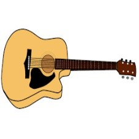

CAL-001-01embedding_outlier
id: photo/guitar/0122 · class: guitar · domain: photo
Open original image

id: cartoon/guitar/0005 · class: guitar · domain: cartoon
Open original image
Semantic rationale: Each image shows one acoustic guitar without a player: a waisted body, round sound hole, attached fretted neck and tuning head. Both show the instrument as a whole, with the neck directed toward the right.
Spurious difference: The pale wooden photograph has visible grain, a handwritten marking, depth and soft shadow. The drawing uses a yellow flat fill, heavy black edges and a plain white field. Tilt and apparent depth differ.
Uncertainty: Body outline, pickguard shape and the handwritten marking differ. Exact model and string count are unresolved; these are not claims of identical physical instruments. The photo's tuning head is tightly framed at the right.
Proposer confidence: 0.9